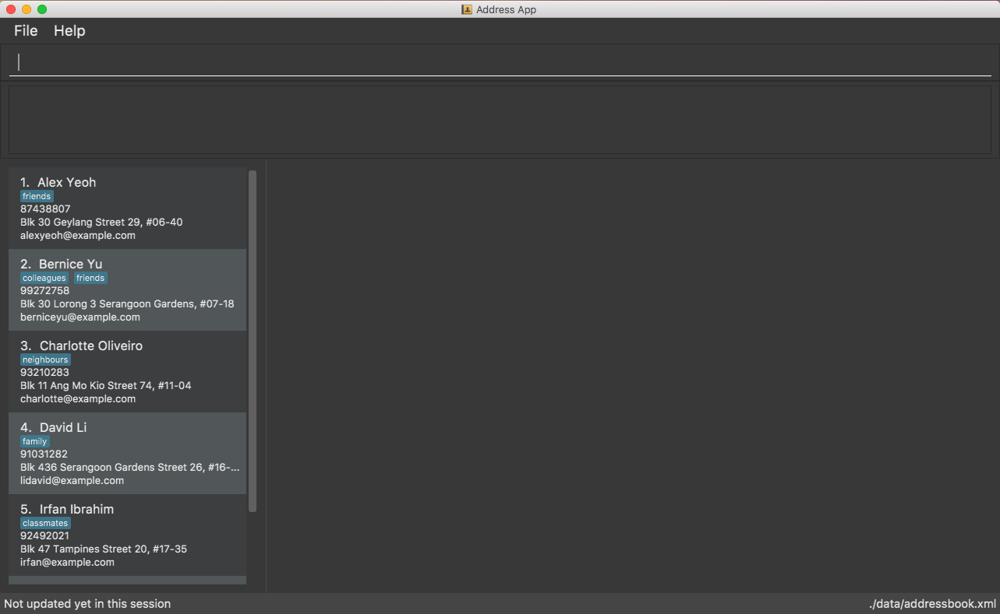

By: CS2113-AY1819S1-W12-1 Since: Aug 2018
- 1. Introduction
- 2. Quick Start
- 3. Features
- 3.1. Viewing help :
help/h - 3.2. Adding a person:
add/a - 3.3. Listing all persons :
list/ls - 3.4. Editing a person :
edit/e - 3.5. Locating persons by name:
find/f - 3.6. Deleting a person :
delete/d - 3.7. Selecting a person :
select/s - 3.8. Listing entered commands :
history/hs - 3.9. Undoing previous command :
undo/z - 3.10. Redoing the previously undone command :
redo/y - 3.11. Clearing all entries :
clear/c - 3.12. Searching for person’s photograph
- 3.13. Exporting all contacts :
exportall - 3.14. Exporting all contacts displayed:
export [coming in v1.4] - 3.15. Exporting contact details of a selected person:
export - 3.16. Add personal schedule :
schedule - 3.17. Add and Delete personal weekly schedule :
schedule[coming in v1.4] - 3.18. List Common Schedule :
commonschedule[coming in v1.4] - 3.19. Add To-do task:
todo - 3.20. Add Reminder:
reminder[coming in v1.4] - 3.21. Meeting Minutes:
minutes[coming in v1.4] - 3.22. Exiting the program :
exit/x - 3.23. Saving the data
- 3.24. Getting Smart Suggestions
- 3.25. Getting Wrong Command Suggestions
- 3.26. Encryption [Coming in V2.0]
- 3.1. Viewing help :
- 4. FAQ
- 5. Command Summary
1. Introduction
JitHub is for students who prefer to use a desktop app for managing contacts, email, and calendar. More importantly, JitHub is optimized for those who prefer to work with a Command Line Interface (CLI) while still having the benefits of a Graphical User Interface (GUI). If you can type fast, JitHub can get your daily tasks such as checking schedule done faster than traditional GUI apps. Interested? Jump to the Section 2, “Quick Start” to get started. Enjoy!
2. Quick Start
-
Ensure you have Java version
9or later installed in your Computer. -
Download the latest
addressbook.jarhere. -
Copy the file to the folder you want to use as the home folder for your JitHub.
-
Double-click the file to start the app. The GUI should appear in a few seconds.
 -
Type the command in the command box and press Enter to execute it.
e.g. typinghelporhand pressing Enter will open the help window. -
Some example commands you can try:
-
list: lists all contacts -
addn/John Doe p/98765432 e/johnd@example.com a/John street, block 123, #01-01: adds a contact namedJohn Doeto the Address Book. -
delete3: deletes the 3rd contact shown in the current list -
exit: exits the app -
h: access the help document
-
-
Refer to Section 3, “Features” for details of each command.
3. Features
Command Format
-
Words in
UPPER_CASEare the parameters to be supplied by the user e.g. inadd n/NAME,NAMEis a parameter which can be used asadd n/John Doe. -
Items in square brackets are optional e.g
n/NAME [t/TAG]can be used asn/John Doe t/friendor asn/John Doe. -
Items with
… after them can be used multiple times including zero times e.g.[t/TAG]…can be used ast/friend,t/friend t/familyetc. -
Parameters can be in any order e.g. if the command specifies
n/NAME p/PHONE_NUMBER,p/PHONE_NUMBER n/NAMEis also acceptable. -
Commands argument can be in any order e.g. 'AddCommand' Format: 'add n/NAME p/PHONE_NUMBER e/EMAIL a/ADDRESS [t/TAG]' can also be 'n/NAME p/PHONE_NUMBER a/ADDRESS e/EMAIL add' [available in V1.4]
3.1. Viewing help : help / h
Format: help
3.2. Adding a person: add / a
Adds a person to the address book
Format: add n/NAME p/PHONE_NUMBER e/EMAIL a/ADDRESS [t/TAG]…
| A person can have any number of tags (including 0) |
Examples:
-
add n/John Doe p/98765432 e/johnd@example.com a/John street, block 123, #01-01 -
add n/Betsy Crowe t/friend e/betsycrowe@example.com a/Newgate Prison p/1234567 t/criminal
3.3. Listing all persons : list / ls
Shows a list of all persons in the address book.
Format: list
3.4. Editing a person : edit / e
Edits an existing person in the address book.
Format: edit INDEX [n/NAME] [p/PHONE] [e/EMAIL] [a/ADDRESS] [t/TAG]…
Examples:
-
edit 1 p/91234567 e/johndoe@example.com
Edits the phone number and email address of the 1st person to be91234567andjohndoe@example.comrespectively. -
edit 2 n/Betsy Crower t/
Edits the name of the 2nd person to beBetsy Crowerand clears all existing tags.
3.5. Locating persons by name: find / f
Finds persons whose names contain any of the given keywords.
Format: find KEYWORD [MORE_KEYWORDS]
Examples:
-
find John
ReturnsjohnandJohn Doe -
find Betsy Tim John
Returns any person having namesBetsy,Tim, orJohn
3.6. Deleting a person : delete / d
Deletes the specified person from the address book.
Format: delete INDEX
Examples:
-
list
delete 2
Deletes the 2nd person in the address book. -
find Betsy
delete 1
Deletes the 1st person in the results of thefindcommand.
3.7. Selecting a person : select / s
Selects the person identified by the index number used in the displayed person list.
Format: select INDEX
Examples:
-
list
select 2
Selects the 2nd person in the address book. -
find Betsy
select 1
Selects the 1st person in the results of thefindcommand.
3.8. Listing entered commands : history / hs
Lists all the commands that you have entered in reverse chronological order.
Format: history
|
Pressing the ↑ and ↓ arrows will display the previous and next input respectively in the command box. |
3.9. Undoing previous command : undo / z
Restores the address book to the state before the previous undoable command was executed.
Format: undo
|
Undoable commands: those commands that modify the address book’s content ( |
Examples:
-
delete 1
list
undo(reverses thedelete 1command) -
select 1
list
undo
Theundocommand fails as there are no undoable commands executed previously. -
delete 1
clear
undo(reverses theclearcommand)
undo(reverses thedelete 1command)
3.10. Redoing the previously undone command : redo / y
Reverses the most recent undo command.
Format: redo
Examples:
-
delete 1
undo(reverses thedelete 1command)
redo(reapplies thedelete 1command) -
delete 1
redo
Theredocommand fails as there are noundocommands executed previously. -
delete 1
clear
undo(reverses theclearcommand)
undo(reverses thedelete 1command)
redo(reapplies thedelete 1command)
redo(reapplies theclearcommand)
3.11. Clearing all entries : clear / c
Clears all entries from the address book.
Format: clear
3.12. Searching for person’s photograph
Searches for the person’s photograph on Google.
-
Person must have an online presence eg. Facebook/LinkedIn for the search to work.
Format:
-
The selected person will be searched on google. Refer to
selecton how to select a person.
3.13. Exporting all contacts : exportall
Export the name, phone, address and email of all persons in the addressbook under the specified filetype.
Format: exportall FILETYPE
Examples:
-
exportall csv -
exportall vcf[coming in v1.4]
|
3.15. Exporting contact details of a selected person: export
Export the name, phone, address and email of the specified person from the addressbook under the specified filetype.
Format: export INDEX FILETYPE
Examples:
-
list
export 2 csv
Exports the 2nd person in the address book as a csv file. -
find Betsy
export 1 csv
Exports the 1st person starting from the 1st person in the results of thefindcommand as a csv file.
3.16. Add personal schedule : schedule
This function enables you to add the scheduled events of a person into the selected person’s card.
Format:
schedule IndexOfPerson d/DDMMYYYY st/START-TIME et/END_TIME en/EVENT-NAME
Examples:
-
schedule 1 d/09092018 st/1200 et/1400 en/CS1231 Exam -
schedule 2 d/08072018 st/1000 et/1900 en/CS2040C Practical Exam
To clear the schedules, please restart the program on your end. Delete and clear schedules will be coming in version 1.4.
Currently, the date validation regex allows for 31 days every month. This issue will be fixed in v1.4
3.17. Add and Delete personal weekly schedule : schedule [coming in v1.4]
Format:
addschedule IndexOfPerson d/DDMMYYYY st/START-TIME et/END-TIME en/EVENT-NAME
delschedule IndexOfPerson d/DDMMYYYY st/START-TIME et/END-TIME en/EVENT-NAME
Examples:
-
addschedule 1 d/08112018 st/1000 et/1200 en/GER1000 -
addschedule 2 d/01012019 st/1000 et/1800 en/FireworkParty -
delschedule 2 d/01012019 st/1000 et/1800 en/FireworkParty
3.18. List Common Schedule : commonschedule [coming in v1.4]
Shows a list of common meeting time for a group of contacts and the user in that given that given period of time.
Format: commonschedule i/IndexOfPerson…[INDEX] sd/START-DATE-DDMMYYYY ed/END-DATE-DDMMYYYY t/AVAIL-HOURS-REQUIRED
Examples:
-
commonschedule i/1 i/2 i/3 sd/08092018 ed/01102018 t/1.5
3.19. Add To-do task: todo
Adds a to-do task, the to-do list panel will display the task’s title and its content.
Format: todo tt/TITLE c/CONTENT
Examples:
-
todo tt/Write tests c/Need to write test for this command -
todo tt/Buy grocery c/Buy tomato and potato on the way back home
3.20. Add Reminder: reminder [coming in v1.4]
Adds a Reminder for your next meeting, along with details to be displayed
Format: reminder d/DDMMYY tm/TIME lc/LOCATION tp/TOPIC
Examples:
-
reminder d/031118 tm/1900 lc/COM2 tp/CS2113T Milestone 1.4
3.21. Meeting Minutes: minutes [coming in v1.4]
Opens up a text box to take meeting minutes
Format: minutes
3.22. Exiting the program : exit / x
Exits the program.
Format: exit
3.23. Saving the data
Address book data are saved in the hard disk automatically after any command that changes the data.
There is no need to save manually.
The storage file 'addressbook.xml' is located in the project root folder.
3.24. Getting Smart Suggestions
Receive smart suggestions while typing in your commands. Press the TAB key while typing a command halfway to get
suggestions on possible commands without having to navigate to the help window. If only one command is available,
pressing TAB will auto-complete the command for you without the need to type it in manually.
Examples:
-
While typing
histo gethistorycommand, pressTAB. Thehistorycommand will automatically be filled in for you as it is the only suggestion available. The command parameters would then be shown as a prompt to help you with your input. -
While typing
e, pressTAB. The system will suggest to you all possible commands that start withe, which would beexportall,exit, andedit.
3.25. Getting Wrong Command Suggestions
Should you type in a wrong command, fear not, as our system will automatically suggest to you what you have typed wrongly, by giving you a closest approximation of word through the message box after you press enter.
Examples:
-
If you wanted to type
selectbut you typedsalectinstead, the system will tell you that it is an invalid command, and would suggest to you the commandselectinstead.
3.26. Encryption [Coming in V2.0]
When exporting contacts for the purpose of information transfer to another computer, encryption can be enabled before the export command to prevent data misuse.
Command type: encrypt for export
4. FAQ
Q: How do I transfer my data to another Computer?
A: Install the app in the other computer and overwrite the empty data file it creates with the file that contains the
data of your previous JitHub folder.
Q: How do I export my contacts to my phone?
A: Use the exportall command to generate a csv/vcf file and transfer that file to your phone. Use your phone contacts
app to import that file.
5. Command Summary
-
Add
add n/NAME p/PHONE_NUMBER e/EMAIL a/ADDRESS [t/TAG]…
e.g.add n/James Ho p/22224444 e/jamesho@example.com a/123, Clementi Rd, 1234665 t/friend t/colleague -
Clear :
clear -
Delete :
delete INDEX
e.g.delete 3 -
Edit :
edit INDEX [n/NAME] [p/PHONE_NUMBER] [e/EMAIL] [a/ADDRESS] [t/TAG]…
e.g.edit 2 n/James Lee e/jameslee@example.com -
Find :
find KEYWORD [MORE_KEYWORDS]
e.g.find James Jake -
List :
list -
Help :
help -
Select :
select INDEX
e.g.select 2 -
History :
history -
Undo :
undo -
Redo :
redo -
ExportAll :
exportall FILETYPE -
Export :
export INDEX FILETYPE -
Mail :
mail [i/INDEX](to be added) -
Todo :
todo tt/TITLE c/CONTENT -
List Schedule :
commonschedule p/PERSON…[PERSON] sd/START-DATE-DDMMYYYY* Mail :mail [i/INDEX]
(to be added) -
Add Schedule :
addschedule d/DDMMYYYY st/START-TIME et/END-TIME en/EVENT-NAME* Mail :mail [i/INDEX]
(to be added)